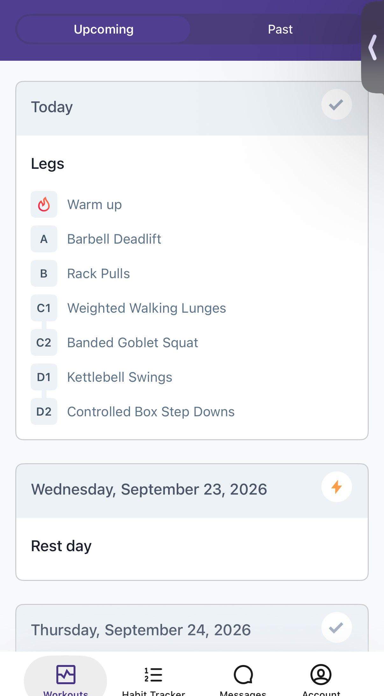
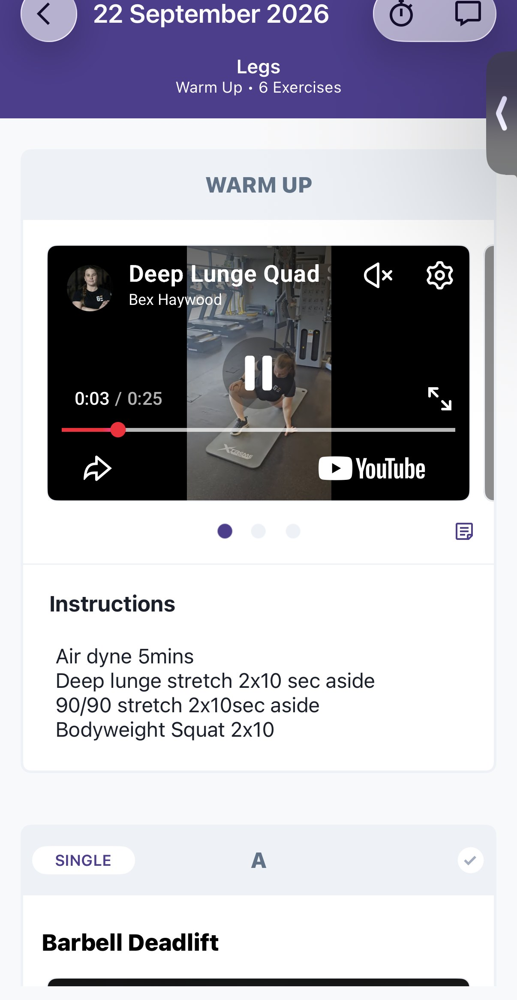
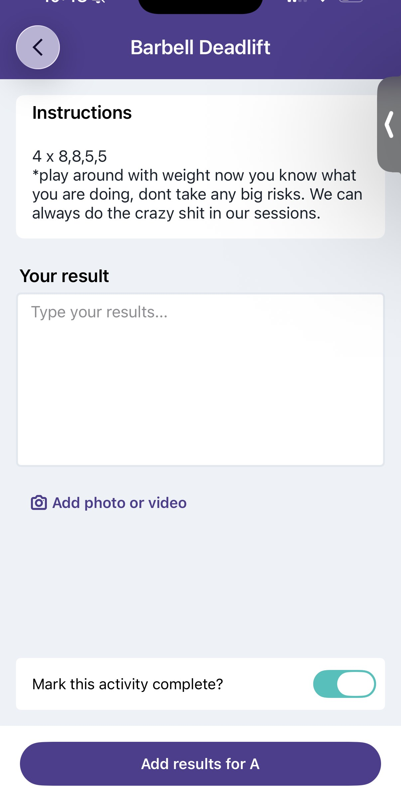
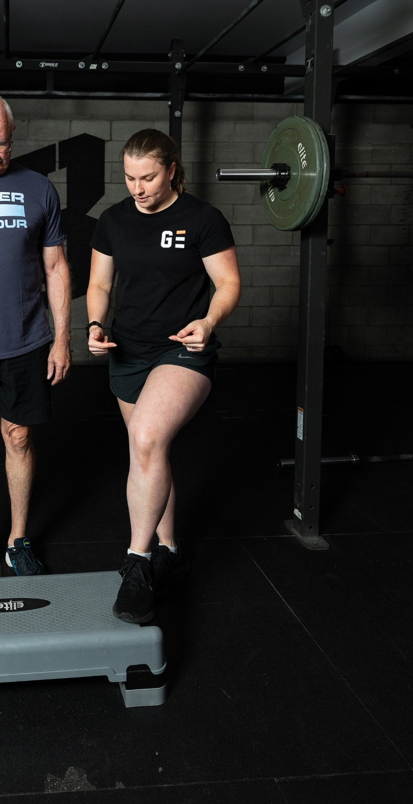

Understand how you move
Learn the fundamentals of movement, your individual habits and imbalances, and how to apply good technique.
PERSONAL TRAINING · REMUERA, AUCKLAND
Technical, fun and evidence-based personal training — designed around your body, your goals and your life.
01 · WHO I HELP
Maybe you've lost motivation. Maybe progress has stalled. Maybe pain or limited movement has been getting in the way.
I work with adults who want to understand their bodies, train with purpose and make sustainable progress without being pushed to exhaustion every session.
My job isn't to destroy you in the gym. It's to teach you how to move well, build confidence, get stronger and leave you able to get on with the rest of your day.
02 · HOW I COACH
Every session is planned. Progress is tracked. As your goals, body or life change, your training changes with you.
Learn the fundamentals of movement, your individual habits and imbalances, and how to apply good technique.
Training can be adapted around injuries, post-surgery recovery and restricted movement, with appropriate clinical guidance where needed.
Strength, movement, confidence and ability give us meaningful ways to measure progress — without relying on scales or mirrors.
Training shouldn't feel like the same punishment every week. Have fun, learn something and actually look forward to coming back.
Fitness is different for every person.
Sometimes the goal is a heavier lift. Sometimes it's tying your shoelaces or walking stairs unassisted. Both matter.03 · SERVICES & PRICING
No hidden consultation just to discover the price. Here's what it costs and what you get.
A planned one-hour session with Bex at Genesis Fitness in Remuera. Technique, programming, coaching and progress tracking tailored to you.
Enquire about 1:1 training →A personalised four-week programme written by Bex and delivered through TrueCoach, with exercise guidance, Bex’s own demo videos and a way to send feedback as you train.
Enquire about online training →04 · ONLINE PROGRAMMING
Not a generic template. Every four-week programme is written by Bex specifically for the individual client and delivered through TrueCoach.
Each exercise can include Bex’s own demonstration video, sets, reps and coaching notes. As you train, you can record results, add notes or comments and send feedback, giving Bex the information she needs to make adjustments.
Get a 4-week programme · $25


05 · GOLF
Strength, mobility and movement quality matter beyond the gym.
Bex has a particular interest in golf-based training: helping golfers move better, build useful strength and manage the physical issues that can get between them and their game.
Talk to Bex about golf training →
06 · MEET BEX
My sporting life started with competitive swimming before strength training took over — first bodybuilding, then strongman movements and eventually powerlifting.
What hooked me wasn't just being strong. It was the technical detail: learning how the body moves, refining technique and being able to measure progress.
I qualified as a personal trainer at 19. Over years of working with different people, I found myself increasingly drawn to clients dealing with pain and injury. Researching an injury, adapting training around it and helping someone feel and move better is one of the most satisfying parts of my job.
07 · GOOD TO KNOW
One session a week can move you towards your goals, but progress can be slow. I generally recommend getting to the gym two or three times a week. They don't all need to be paid PT sessions — some can simply be practising what you've learned with me.
No. That's deliberately not my coaching style. I want training to challenge you without unnecessarily increasing injury risk or leaving you unable to function the next day.
This is an area I particularly enjoy working in. Training can often be adapted around injuries and restricted movement. Where appropriate, medical or allied-health advice should also guide your training.
In-person sessions are held at Genesis Fitness in Remuera, Auckland.
08 · GET STARTED
Get in touch. Tell Bex what you'd like help with and she'll take it from there.